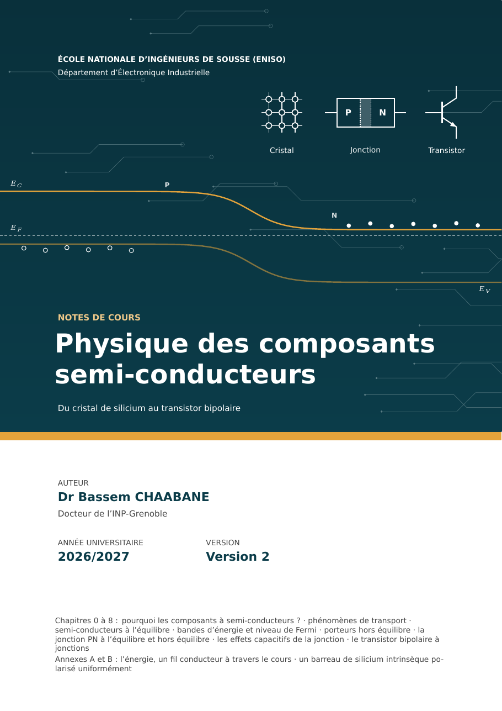

Physique des composants semi-conducteurs
Du cristal de silicium au transistor bipolaire
Dr Bassem CHAABANE · Département d’Électronique Industrielle
École Nationale d’Ingénieurs de Sousse (ENISO)
Le cours suit un seul chemin, du cristal de silicium au transistor bipolaire. Il commence par la façon dont les charges se déplacent dans un solide (dérive, diffusion, continuité), construit l’image d’un semi-conducteur à l’équilibre (liaisons, trous, dopage, bandes d’énergie et niveau de Fermi), puis met les porteurs hors équilibre. Avec ces outils, il construit pas à pas la jonction PN, à l’équilibre, polarisée et comme réservoir de charge, et se termine par deux jonctions qui partagent une base courte : le transistor bipolaire.
Le cristal
Transport, porteurs et bandes
- Chapitre 0Pourquoi les composants à semi-conducteurs ? Buts, histoire et technologieLa physique comme outil · un matériau, de nombreux composants · les trois piliers du cours · des tubes à vide aux transistors nanométriques · comment on fabrique une puce
- Chapitre 1Phénomènes de transport : dérive, diffusion et continuitéDensité de courant · modèle de Drude · loi d’Ohm · vitesse thermique · diffusion · relation d’Einstein · équation de continuité · on débranche une pile
- Chapitre 2Les semi-conducteurs purs et dopés à l’équilibre : une vue qualitativeObservations · liaisons · paires électron–trou · le trou · génération et recombinaison · dopage n et p · modèle hydrogénoïde · loi d’action de masse · neutralité
- Chapitre 3Les semi-conducteurs purs et dopés à l’équilibre : bandes d’énergie et niveau de FermiLiaisons rappelées · électrons libres · bandes et gaps · métal, isolant, semi-conducteur · Fermi–Dirac · masse effective et densité d’états · n, p et ni · niveau intrinsèque · niveaux donneurs et ionisation · neutralité · niveau de Fermi, dopage et température
- Chapitre 4Les porteurs hors équilibreÉquilibre, régime permanent, transitoire · retour à l’équilibre · lumière et photoconductivité · mécanismes de recombinaison · courants d’électrons et de trous · continuité · longueur de diffusion · une surface éclairée, de l’allumage au régime permanent Lumière allumée, éteinte
La jonction
Équilibre, polarisation et capacités
- Chapitre 5La jonction PN à l’équilibreL’image générique : deux morceaux, contact, diffusion et dérive · la couche chargée · l’image des bandes : le niveau de Fermi est constant, la barrière · densités de porteurs à travers la jonction · la barrière de potentiel, deux voies · électrostatique, largeur et champ maximal La jonction se forme
- Chapitre 6La jonction PN hors équilibreL’image générique : la barrière et les flux qui la traversent · les bandes sous polarisation et les quasi-niveaux de Fermi · densités de porteurs, en direct et en inverse · de la lampe à la jonction · la loi de Shockley de la diode longue · la diode courte · le courant à l’intérieur du composant · la caractéristique · effet photovoltaïque · DEL · une base courte, 1947 Injection et courant
- Chapitre 7Les effets capacitifs de la jonctionDeux réservoirs de charge · la ZCE en polarisation inverse · la capacité de transition · la mesure en 1/C^2 · la varicap · la charge minoritaire stockée · la capacité de diffusion · la diode en petit signal · le blocage d’une diode · transistors et logique Les deux capacités
Le transistor
Le transistor bipolaire à jonctions
Annexes
Deux fils conducteurs du cours
- Annexe AL’énergie : un fil conducteur à travers le coursÉtat et transfert · le zéro de l’énergie · l’hydrogène et les énergies négatives · états quantiques · des niveaux atomiques aux bandes · le bord de bande · états permis et états occupés · où va l’énergie
- Annexe BUn barreau de silicium intrinsèque polarisé uniformémentÉquilibre · les bandes s’inclinent · conditions aux limites aux contacts · continuité · dérive et diffusion ensemble · pourquoi les profils sont uniformes · le courant de dérive · quasi-niveaux de Fermi
Interactifs
Les mécanismes des chapitres 4 à 8, en mouvement, calculés à partir des équations du cours.


Téléchargements
Les versions imprimables, avec le même contenu que ce site.